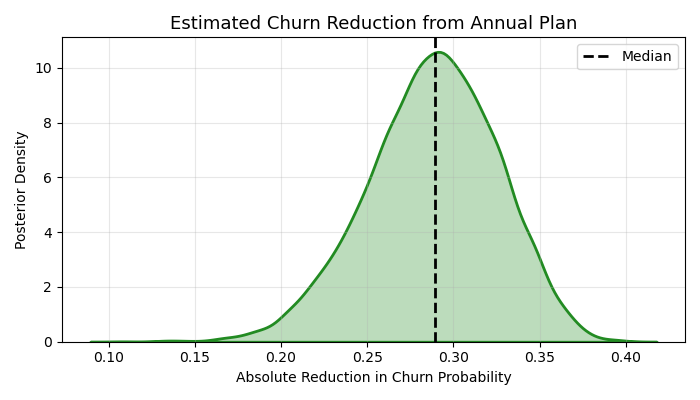

Product Metrics and Bayesian Churn Modeling
This project simulates product metric analysis and causal modeling for Streamly, a fictional subscription-based streaming platform. It demonstrates how product data scientists quantify user retention and estimate causal uplift using Bayesian methods.
- Simulated transactional and usage data including churn events and plan types
- Computed ARPU and retention by cohort, with behavioral segmentation
- Applied Bayesian logistic regression to estimate churn reduction from annual plans
- Visualized posterior distribution and interpreted business impact
- Posterior results indicate a ~30 percentage point reduction in churn with high certainty
For full code and methodology, see the GitHub repository.
Visual Summary
Posterior Churn Reduction Estimate (Annual Plan vs Monthly)
